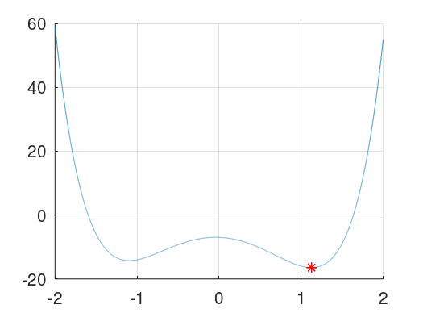

Optimizacion 1
Ignacio Sica
17/06/21
En este problema se pedia hallar un minimizador para la funcion dada a traves de los 3 metodos de optimizacion vistos en clase, el metodo de newton, la busqueda dorada y el metodo de optimizacion cuadratica. En el proceso pude observar como los 3 metodos funcionan de la manera esperada pero sin embargo hay grandes diferencias entre ellos con lo que respecta a la eficiencia de los algoritmos y la rapidez. Primero esta el metodo de newton, este, mas alla de ser el mas rapido, es tambien el que precisa menor numero de iteraciones. Luego se encuentra el segundo algoritmo de optimizacio, el de busqueda dorada. Este requiere de muchas mas iteraciones que sus contrapartes, sin embargo, es el unico que matematicamente puede asegurar un limite en las iteraciones, es decir, hay un numero maximo de itaraciones necesarias para hayar el resultado. En este caso precisa de 32 iteraciones. Por ultimo esta el metodo cuadratico, este, a pesar de solo precisar de 4 iteraciones mas que newton, demora mas de 7 veces el tiempo que el primero. Esto se debe a que en cara iteracion se hacen operaciones muy costosas con respecto a las que se realizan en cada iteracion de newton. Este metodo tambien demora mas que el de busqueda dorada que precisa de 4 veces mas iteraciones. En la grafica aparace solo un punto ya que los 3 metodos dan el mismo resultado.
disp("Problema 1:") t = linspace(-2, 2, 5000); hold on plot(t, arrayfun(@(t) f(t), t)); grid on; x = 1.2; pValue = 1.4; ppValue = 1.6; xL = 0; xU = 5; maxI = 50; minE = 10e-7; disp("newton") tic(); [state, val, iCounter] = newton(x, maxI, minE) time = toc (); printf("Time elapsed: %ds", time), disp("") plot(val,f(val),'r*') disp("golden_mean") tic(); [state, val, iCounter] = golden_mean(xL, xU, "minimization", maxI, minE) time = toc (); printf("Time elapsed: %ds", time), disp("") plot(val,f(val),'r*') disp("quadratic") tic(); [state, val, iCounter] = quadratic(x, pValue, ppValue, maxI, minE) time = toc (); printf("Time elapsed: %ds", time), disp("") plot(val,f(val),'r*')
Problema 1: newton state = success val = 1.1265 iCounter = 4 Time elapsed: 0.000403881s golden_mean state = success val = 1.1265 iCounter = 32 Time elapsed: 0.000885963s quadratic state = success val = 1.1265 iCounter = 8 Time elapsed: 0.00455117s
En este ejercicio se pide optimizar una funcion de dos variables. Esta optimizacion se realiza mediante el metodo de descenso por gradiente. Este metodo depende internamente de otro metodo (paso optimo) que a su vez es un metodo de optimizacion de una sola variable. Cabe destacar que el metodo funciona igual sin este segundo metodo pero demora de mucho mas tiempo para hallar el resultado y tambien mas iteraciones.
disp("Problema 2:") maxI = 50; minE = 10e-6; x1 = 1; x2 = -3; xv = [x1;x2]; disp("gradient_descent") tic(); [state, x, iCounter] = gradient_descent(xv, maxI, minE) time = toc (); printf("Time elapsed: %ds", time), disp("")
Problema 2: gradient_descent state = success x = 2.0000 1.0000 iCounter = 23 Time elapsed: 0.0622461s
Eric Walter, Springer, Numerical Methods and Optimization
Richard Khoury & Douglas Wilhelm Harder, Springer Numerical Methods and Modelling for Engineering
Gauss�Seidel method, Wikipedia, (https://en.wikipedia.org/wiki/Gauss%E2%80%93Seidel_method)
Norm (mathematics), Wikipedia (https://en.wikipedia.org/wiki/Norm_(mathematics))
Javier Segura, Universidad de Cantabria, Introduccion al analisis numerico (https://personales.unican.es/segurajj/intro.pdf)
Errors for Linear Systems (http://terpconnect.umd.edu/~petersd/460/linsysterrn.pdf)
Inv Function (https://octave.sourceforge.io/octave/function/inv.html)
https://www.unioviedo.es/compnum/labs/PYTHON/Interpolation.html https://www.youtube.com/watch?v=Az2jhvu2i2I http://www.ugr.es/~mpasadas/ftp/Inter2.pdf
function [state, val, iCounter] = golden_mean(xL, xU, pType, maxI, minE) x0 = 0.6180 * xL + (1 - 0.6180) * xU; x1 = (1 - 0.6180) * xL + 0.6180 * xU; iCounter = 0; while(1==1) if(pType = "minimization") if(f(x0) < f(x1)) xU = x1; x1 = x0; x0 = 0.6180 * xL + (1 - 0.6180) * xU; elseif xL = x0; x0 = x1; x1 = (1 - 0.6180) * xL + 0.6180 * xU; endif endif cError = abs(xU - xL); iCounter = iCounter + 1; if(cError <= minE) val = x0; state = "success"; return; endif if(iCounter >= maxI) val = x1; state = "failure"; return; endif endwhile endfunction
function [state, val, iCounter] = gradient_descent(x, maxI, minE) iCounter = 0; while(1==1) h = optimalStep(x); xh = x - h * evalGradient(x); pValue = x; x = xh; cError = norm(x-pValue); iCounter = iCounter + 1; if(cError <= minE) val = x; state = "success"; return; endif if(iCounter >= maxI) val = x; state = "failure"; return; endif endwhile endfunction
function [state, val, iCounter] = newton (x, maxI, minE) iCounter = 0; while(1==1) pValue = x; x = x - (df(x) / ddf(x)); cError = abs((x-pValue) / x); %cError = abs(max((x-pValue), (fun(x) - fun(pValue)))); iCounter = iCounter + 1; if(cError <= minE) val = x; state = "success"; return; endif if(iCounter >= maxI) val = x; state = "failure"; return; endif endwhile endfunction
function [state, val, iCounter] = quadratic (x, pValue, ppValue, maxI, minE) c = [ppValue; pValue; x]; iCounter = 0; while(1==1) V = fliplr(vander(c)); Y = [f(ppValue); f(pValue); f(x)]; C = sem_plu(V,Y); c(1) = c(2); c(2) = c(3); c(3) = (-1 * (C(2))) / (2 * C(3)); ppValue = pValue; pValue = x; x = (-1 * (C(2))) / (2 * C(3)); cError = abs((x-pValue) / x); iCounter = iCounter + 1; if(cError <= minE) val = x; state = "success"; return; endif if(iCounter >= maxI) val = x; state = "failure"; return; endif endwhile endfunction